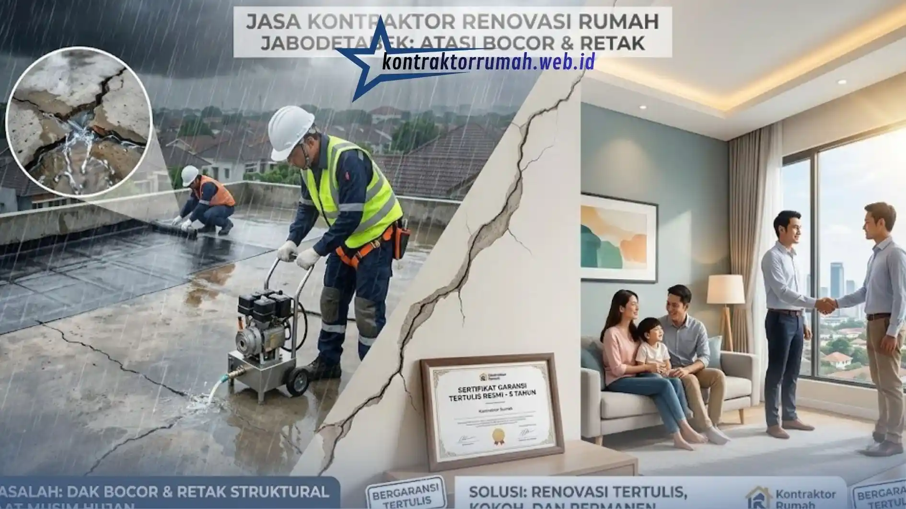

Jasa Kontraktor Renovasi Rumah Jabodetabek: Atasi Bocor & Retak Bergaransi
 Anggun Tri Stya
|
22 Agustus 2026
|
Waktu baca: 8 Menit
Anggun Tri Stya
|
22 Agustus 2026
|
Waktu baca: 8 Menit

Rumah bocor saat musim hujan dan dinding yang mulai retak bukan sekadar masalah estetika. Jika dibiarkan terlalu lama, kerusakan ini bisa merambat ke struktur bangunan dan membengkakkan biaya perbaikan berkali-kali lipat. Di sinilah peran kontraktor renovasi rumah yang tepat menjadi krusial.
Bukan sekadar tukang bangunan biasa, kontraktor renovasi rumah profesional memahami akar masalah kebocoran, penyebab keretakan struktural, dan cara menanganinya secara permanen — bukan tambal sulam yang berulang setiap tahun. Kontraktor Rumah hadir sebagai solusi kontraktor renovasi rumah di Jabodetabek yang berfokus pada dua masalah paling sering dikeluhkan pemilik rumah: kebocoran dak/atap dan retak dinding struktural.
Ringkasan Inti
- Kontraktor renovasi berbadan usaha memberi garansi tertulis, berbeda dengan tukang lepas
- Kebocoran dak ditangani dengan waterproofing membrane dan tes rendam air sebelum serah terima
- Retak dinding dibedakan retak rambut dan retak struktural melalui asesmen crack meter
- RAB disusun transparan dan disepakati sebelum pekerjaan dimulai, tanpa biaya tersembunyi
- Layanan menjangkau seluruh Jabodetabek dengan konsultasi awal gratis via WhatsApp
Daftar Isi
1. Mengapa Memilih Kontraktor Renovasi Profesional, Bukan Tukang Lepas?
Banyak pemilik rumah tergoda memakai tukang lepas karena harga awal yang terlihat murah. Namun tanpa perhitungan Rencana Anggaran Biaya (RAB) yang jelas, pengawasan struktural, dan garansi pekerjaan, risiko kerusakan berulang justru meningkat. Berikut alasan mengapa jasa kontraktor renovasi rumah berbadan usaha lebih menguntungkan dalam jangka panjang:
- Analisis akar masalah, bukan gejala — kebocoran dak seringkali disebabkan oleh retak rambut pada waterproofing, kemiringan dak yang salah, atau saluran air yang tersumbat. Kontraktor profesional mendiagnosis penyebab sebelum mengeksekusi perbaikan
- Material sesuai standar konstruksi — penggunaan semen, besi, dan bahan waterproofing yang tepat mutu mencegah kerusakan berulang dalam 1–2 tahun ke depan
- Garansi tertulis — pembeda utama antara kontraktor resmi dan tukang harian, yakni jaminan bahwa jika masalah muncul kembali dalam periode tertentu, perbaikan dilakukan tanpa biaya tambahan
- Legalitas dan pertanggungjawaban jelas — kontraktor berbadan usaha memiliki tanggung jawab hukum dan reputasi yang dipertaruhkan, berbeda dengan tukang lepas yang sulit dilacak jika terjadi masalah
Kontraktor Rumah membangun layanan di atas empat prinsip tersebut, menjadikan kami pilihan kontraktor renovasi rumah yang banyak direkomendasikan warga Jabodetabek untuk penanganan bocor dan retak.
2. Layanan Utama Kontraktor Renovasi Rumah dari Kontraktor Rumah
Perbaikan Dak Bocor & Waterproofing. Kebocoran dak beton maupun atap genteng ditangani dengan metode injeksi grouting, pelapisan waterproofing membrane, hingga perbaikan struktur kemiringan (talang) jika diperlukan. Setiap pengerjaan didahului dengan tes rendam air untuk memastikan sumber kebocoran benar-benar teratasi sebelum proyek dinyatakan selesai.

Injeksi & Perbaikan Dinding Retak Struktural. Retak dinding dibedakan menjadi retak rambut (non-struktural) dan retak struktural akibat pergeseran pondasi atau beban berlebih. Tim kami melakukan asesmen menggunakan crack meter sebelum menentukan metode: tambal biasa untuk retak rambut, atau injeksi epoxy/polyurethane bertekanan untuk retak struktural yang lebih serius.
Renovasi Total & Sebagian. Selain penanganan bocor dan retak, jasa kontraktor renovasi rumah dari Kontraktor Rumah juga mencakup renovasi dapur, kamar mandi, penambahan lantai (loteng), hingga renovasi total rumah dengan desain ulang tata ruang sesuai kebutuhan keluarga modern.
Perkuatan Struktur & Pondasi. Untuk rumah lama dengan indikasi penurunan pondasi, kami menyediakan layanan perkuatan struktur menggunakan metode sesuai rekomendasi insinyur sipil, termasuk penambahan sloof atau kolom praktis.
3. Matriks Standar Mutu: Apa yang Membedakan Kontraktor Rumah?
Berikut perbandingan standar kerja yang seharusnya dipenuhi kontraktor renovasi rumah profesional, dan bagaimana Kontraktor Rumah menjawabnya di setiap proyek:
| Kriteria | Standar Mutu Industri | Solusi Kontraktor Rumah |
|---|---|---|
| Garansi Pekerjaan | Minimal ada jaminan, namun sering tidak tertulis | Garansi tertulis resmi pasca-proyek untuk item bocor & retak |
| Transparansi RAB | Estimasi kasar tanpa rincian material | RAB detail per item material & jasa, disepakati sebelum mulai kerja |
| Metode Anti-Bocor | Tambal manual tanpa uji coba | Waterproofing membrane + tes rendam air sebelum serah terima |
| Penanganan Retak Struktural | Ditambal kosmetik tanpa analisis akar masalah | Asesmen crack meter + injeksi epoxy/polyurethane sesuai tingkat keparahan |
| Tim Pelaksana | Tukang harian lepas tanpa supervisi | Tim tukang terlatih di bawah pengawasan tenaga sipil |
| Area Layanan | Terbatas satu wilayah | Jabodetabek (Jakarta, Bogor, Depok, Tangerang, Bekasi) |
| Konsultasi Awal | Berbayar atau tidak tersedia | Gratis via WhatsApp 088989643555 |
4. Proses Kerja Kontraktor Renovasi Rumah di Kontraktor Rumah
Transparansi proses membantu Anda merasa yakin sebelum berkomitmen. Berikut tahapan kerja kami:
- Konsultasi & Survei Lokasi — tim kami datang langsung ke rumah Anda di area Jabodetabek untuk mengukur tingkat kerusakan bocor atau retak
- Penyusunan RAB Transparan — Anda menerima rincian biaya material dan jasa secara tertulis, tanpa biaya tersembunyi
- Kesepakatan & Kontrak Kerja — termasuk poin garansi tertulis sebagai bagian dari perjanjian
- Eksekusi Pekerjaan — dikerjakan oleh tim tukang berpengalaman dengan pengawasan berkala
- Quality Control & Serah Terima — pengujian hasil kerja (misalnya tes rendam air untuk dak) sebelum proyek dinyatakan selesai
- Masa Garansi Berjalan — Anda dapat menghubungi kembali jika ditemukan kendala dalam periode garansi
5. Estimasi Biaya Jasa Kontraktor Renovasi Rumah
Biaya renovasi sangat bervariasi tergantung tingkat kerusakan, luas area, dan jenis material yang dipilih. Sebagai gambaran umum:
- Perbaikan dak bocor skala kecil–menengah: mulai dari kisaran harga per meter persegi yang kompetitif untuk area Jabodetabek
- Injeksi dinding retak struktural: dihitung berdasarkan titik retak dan tingkat keparahan
- Renovasi total: disesuaikan dengan RAB detail setelah survei lapangan
Karena setiap rumah memiliki kondisi berbeda, cara paling akurat untuk mengetahui estimasi biaya adalah dengan konsultasi dan survei langsung — layanan yang kami sediakan gratis tanpa komitmen bagi warga Jabodetabek.
6. Area Layanan: Jabodetabek
Kontraktor Rumah melayani jasa kontraktor renovasi rumah di seluruh wilayah Jabodetabek, mencakup:
- Jakarta (Jakarta Selatan, Jakarta Timur, Jakarta Barat, Jakarta Utara, Jakarta Pusat)
- Bogor dan sekitarnya
- Depok
- Tangerang dan Tangerang Selatan
- Bekasi
Tim survei kami siap datang ke lokasi Anda untuk melakukan asesmen langsung tanpa dikenakan biaya.
Setiap hari yang berlalu tanpa penanganan, kebocoran dan retak berpotensi merambat lebih luas dan meningkatkan biaya perbaikan di kemudian hari. Sebagai kontraktor renovasi rumah berpengalaman di Jabodetabek, Kontraktor Rumah siap membantu Anda dengan solusi permanen, transparan, dan bergaransi tertulis. Konsultasikan kondisi rumah Anda sekarang via WhatsApp 088989643555.